debugtools is a mod used by the developers to help debugging the game.
It comes pre-installed with Stonehearth in the current releases, so any player / modder can use it.
By default it is disabled. To enable it:
- Run Stonehearth
- While in the Main Menu, open the Mods menu
- In the "Local Mods" list, check the box for 'debugtools'
- Click on "Quit to Main Menu", and accept to reload so that the changes will take place.
- Start or load a game.
Debugtools is a set of 10 tools located in the upper-right corner of the screen:
Some general info:
 Any blue text in the various debugtools is a link to other information or to trigger something.
Any blue text in the various debugtools is a link to other information or to trigger something.
You can drag around the UI of any of these tools.
If a debug tool is open while you open any other in-game UI view, the tool's UI might move around the screen. It will return to its original position once you close the other UI view.
Let's go over them one by one:
 Campaign Browser
Campaign Browser AI Inspector
AI Inspector Object Browser
Object Browser Performance Monitor
Performance Monitor Entity Editor
Entity Editor- Job Monitor
 Trace Monitor
Trace Monitor Item Stamper
Item Stamper Lua Console
Lua Console- Time Slider
Campaign browser:
The campaign browser shows the current status of the game master in terms of campaigns, in the form of a horizontal tree with nodes. You can see (and trigger) encounters with it, and check the ones that are currently active. You can use this tool to debug your own modded campaigns, see if their flow is correct and spawn them at any given time.
Some tips for using the campaign browser:
Click on the white dot of a parent node to collapse / expand that branch or sub-branch. Useful when the tree feels too cluttered.
Click on the name of a node to open a contextual menu. If the encounter hasn't been triggered yet, you will see an option to trigger it. Click on the blue text to do so: 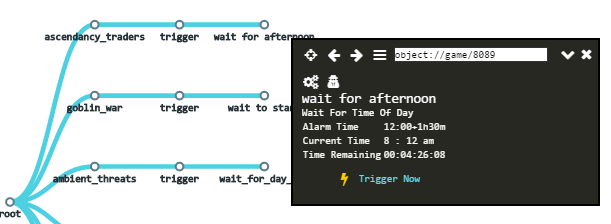
If the encounter has already been triggered you will see info about it in the contextual menu: 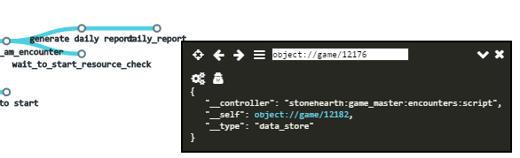
There are a couple of buttons in the contextual menus. One is "Toggle Raw View" (a gears icon) and the other one is "Toggle Private Variables View". Clicking on them will show / hide extra information in the contextual menu when applicable (sometimes there will be no private variables to show).


If the encounter can spawn more than one encounter, you will see a list of the options available as well as the default trigger. This is useful because we can trigger directly the encounter that we want to debug, instead of a randomly chosen one: 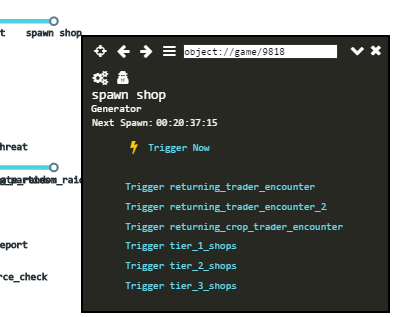
Some encounters might have extra options in the contextual menus. Other might have requirements that can't be skipped by triggering them with this tool, but you can cheat with the rest of debug tools in order to meet them, and then try to trigger them again.
Some encounters will have a timer on them. You can try to trigger them with "Trigger Now" or let the game play at a higher speed to wait until the timer expires. If the encounter is a generator, has some unmet start requirements or has the chance to not spawn a child node, the timer may reset without spawning anything.
Campaigns might delete some encounters or chains of encounters once they finish, but if the campaign browser is open when that happens, these encounters will still be shown, so you will get UI errors if you try to click / trigger them. Close and reopen the campaign browser in order to refresh it.
If you get any UI errors while using this debug tool, press F5 to reload the UI.
You can also start the game master from within the campaign browser if you're in a test world that hasn't initialized it. There's a trigger next to the close button: 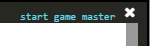
Don't forget to unpause the game when you test the encounters, some of them might need it to finish triggering.
The fastest way to spawn enemies when debugging combat-related stuff is triggering the raiding parties from the ambient threats campaign. If you need tougher raids than the initial ones, use other debug tools to increase your net worth or try with other methods (e.g.: preparing a test world with the Microworld mod).
AI Inspector:
To use the AI inspector, select a living entity from inside the game, and open the AI inspector by clicking on it. It will show which actions are currently being considered and which action is currently running.

It has a search bar that will highlight matching actions in the tree (it will also highlight the parent nodes of those actions). You can click on the dashes next to the actions to collapse / expand the nodes. 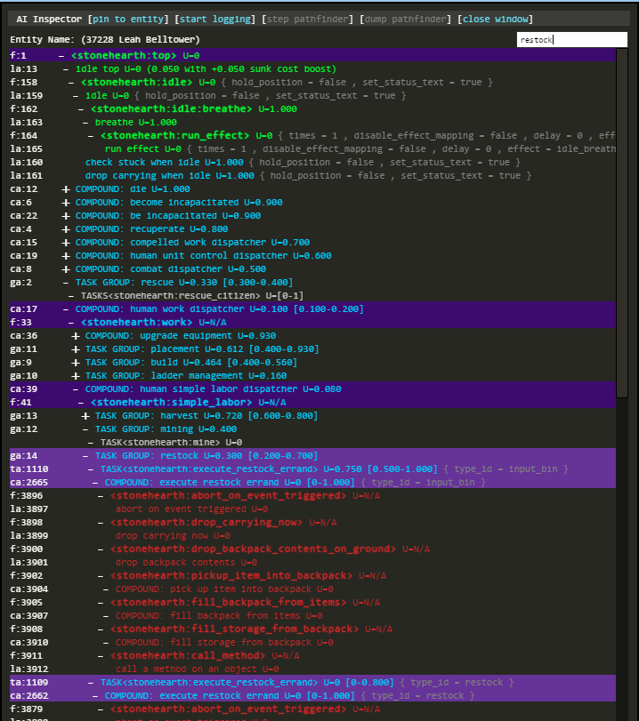
The tree will refresh often (hearthlings and other living entities are constantly thinking) so you might want to pause the game to observe the status of the entity at a given moment.
At the top of the tool, there's a "pin to entity" option. If you toggle it, the AI inspector will keep showing the AI of that entity, even if you select a different entity or click in the terrain / UI. There are other debug options at the top, too.
If you look at the bottom, there's a little explanation of the color code used in the tree:
- Blue text is for actions that the entity is currently thinking about whether he/she can execute them or not.
- Yellow text is for actions that the entity determined that can be immediately run if needed.
- Red text is for actions that the entity has stopped thinking about, because they were not applicable with the current status of the world, or due to other reasons.
- Dark green is for actions/activities that the entity has already started to execute.
- Bright green is for actions that the entity is currently executing.
- Darkest / grayish green is for actions that the entity has finished.
- Light gray is for potential actions that are not being thought about right now but can be activated by other means.
More information about AI in the advanced sections of the modding guide.
As a short introduction to AI, intelligent entities in Stonehearth run a Hierarchical Task Network to perform activities by making, comparing, and executing plans made up of actions. Many potential plans are typically being considered at a time, most of which are not ready to execute, or are suboptimal, and the AI constantly selects the one best plan to execute at any given time.
We have activities, which are behaviors that can have multiple implementations, and actions, which are specific implementations of an activity. For example, if "get food" is an activity, "get food from stockpile", "get food from backpack", and "hunt wild animal" may all be implementations of the "get food" activity.
Each action can be a compound action or a leaf action. Compound actions are labeled like so in the AI inspector. They are composed of several steps, each of them being an action. For a compound action to start running, the entity must have determined that each of its child actions can be run in order.
The inspector will also show the value of the arguments for the actions next to them, which gives us more information about what's happening inside the selected entity's mind.
Object Browser:
Select an entity inside the game and open the Object Browser. You will see all the components that the entity has, and a couple more fields:

You can see some buttons ("Toggle Raw View", "Toggle Private Variables View") that are reused in other debugtools, such as the contextual menus of the campaign browser. The collapse/expand and close buttons are also reused in other debug tools.
There's also a new icon in this tool (a magnifying glass with a + inside, like a "zoom in" icon) which will center the camera over the entity that the object browser is showing, unless the entity is not in the world (e.g.: inside a storage, etc).
There's a "Track Selected" icon at the top left of the object browser that you can toggle. When it's active (in yellow) the tool will update its contents whenever you select a different entity. When it's not yellow, selecting a new entity won't refresh its contents. This is useful when you want to compare the components of two separate entities side by side. Simply open a new object browser and select a different entity.
The bar at the top refers to the current object being shown by the object browser. It will show the numeric ID of that object. If you know the ID of some object, you can manually write it there to inspect it. Clicking on any of the blue texts will navigate to the data of that component, showing the values that the selected entity has. Inspecting the "uri" field will show the contents of the JSON file for that URI.
With this tool and the ability to toggle the private variables view, we can inspect values that are not exposed to the UI, such as the current value of expendable resources and the like, contents of private storages, etc. Since clicking on new links will bring us to different objects, we can use the "Back" and "Forward" buttons to navigate to the previous objects that we were inspecting.
 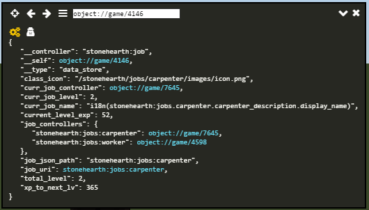
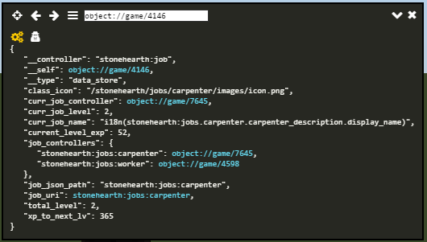
Lastly, the "Show All Entities" button (looks like 3 horizontal lines) will show a separate window with a list of all the existing entities for the current game and their count. This button might also appear in other debug tools.
 It has a search bar and will also show entities that are bugged / out of bounds (out of the world). The "[no uri]" entities are special entities like the terrain.
It has a search bar and will also show entities that are bugged / out of bounds (out of the world). The "[no uri]" entities are special entities like the terrain.
Clicking on one of the items from the list will open a new window showing an array that contains the references to all the entities of that type (e.g.: all berry bushes).

Performance Monitor:
This tool is used to measure some performance values:

You can also do some profiling with it, with help of the Lua profiler scripts. The bar next to the speed buttons shows the resource usage of several background tasks, too. You can toggle a breakdown of the different colors if you click on it. 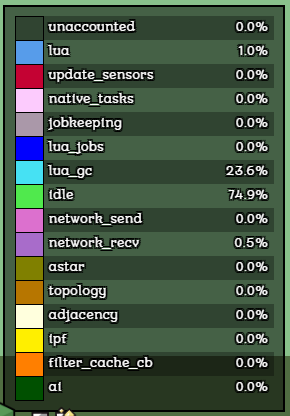
The development team also used a different telemetry tool for measuring performance in more detail, but these tools can still show any obvious bottlenecks or issues.
Entity Editor:
The entity editor allows us to fiddle with the collision and destination regions of the entities. Select an entity, and click on this tool (or viceversa): 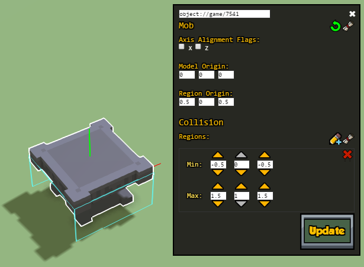
You can then adjust the model / region origins and collision / destination regions visually inside the game. It'll help if you open the zones menu or some other menu that activates the grid in the terrain, that way you can see the alignment better: 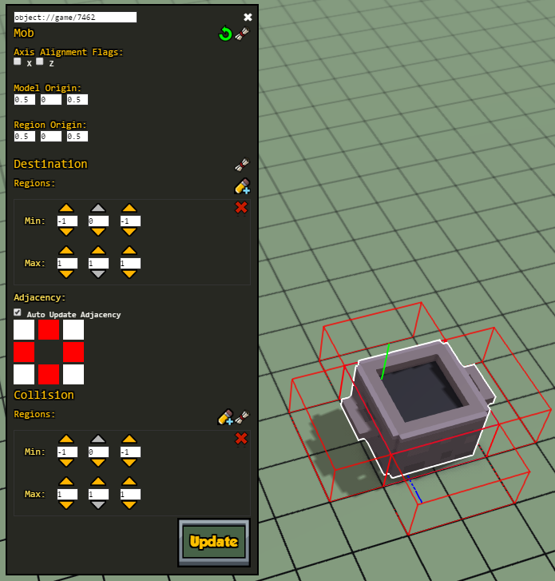 The labels have useful tooltips to help explain the different values. We'll be covering these regions in another section of the guide, if you need more info.
When you're happy with the regions, you can click on the "Show Json" button (the scroll) and a new window will open with the updated values, so that you can copy-paste them into your entity's JSON file:

Job Monitor:
This tool monitors the tasks of the hearthlings. It shows info about idle hearthlings and other creatures:

If you click on a hearthling, the job monitor will only show info about that hearthling. If you click on the terrain or deselect any entity, it will show info about all the idle entities.
It also shows the status of their pathfinder, if they're trying to search for something that is very far away, though it usually disappears quickly (unless the game is laggy). It will show the priority, ticks, and AI spin counts next to the entity's name, and what they're doing:

Mostly used to investigate idle hearthlings.
Trace Monitor:
This tool is used to track the traces for the UI. It will add / remove some objects from the list if you select different entities.

We can check if some trace failed, and which ones are in progress. It lists the object IDs, so we can use the object browser to check which objects each of them trace (if applicable). It might take some seconds to load all the information (same for the object browser if the object is too big).
Notice that this tool's window can't be dragged, unlike the rest of debug tools.
Item Stamper:
This is the most used tool from the debugtools mod. The item stamper or item dropper allows to spawn any entity in the game. Simply type part or all of the alias of the item that you are searching and it will show a dropdown with a list of matched items: 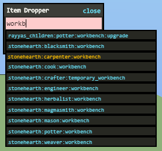
You can click on the list item to not have to type all the alias. Then, check the "iconic" checkbox to spawn the item as an iconic, or leave it unchecked if you don't want to (or if the item doesn't have an iconic form). After that, click on the terrain to spawn the item as many times as you like, and right-click to exit placing mode: 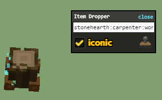
You can go faster by clicking the "x9" checkbox, it will spawn 9 entities with just 1 click: 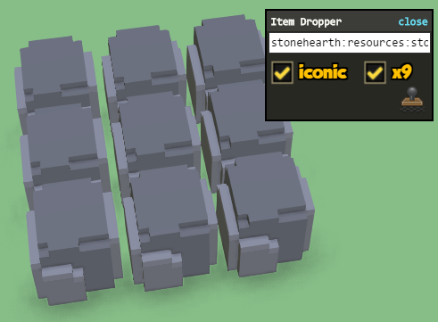
It helps to know the actual URI / alias of the entity, since sometimes it doesn't match the display name for it (e.g. the Mean Bed's alias is "stonehearth:furniture:not_much_of_a_bed").
If the game is paused and you spawned an entity that has AI or an entity that has animations, it might appear squashed until you unpause.
Also, if you spawn a monster, it will be friendly to your citizens: the item stamper assigns your town as owner of anything you spawn. Changing the amenity to hostile won't work in this case, because you'd be changing the amenity of all of your items, which will result in nothing.
To spawn aggresive enemies, you'll need to use the campaign browser.
The UI of the item stamper is a little buggy sometimes. It can also list things that are not placeable items nor living entities, it doesn't filter completely all the items in the game and might not fit inside the window if it's too long.
Lua Console
With this console we can execute any Lua function available in the game's files, and check values of private variables too. It is super useful for debugging.
We can execute code from the server side. If we select an entity, we can use "e" to access it from this console. For example, here we've selected a hearthling. We store her in a new variable, and execute code to make her hungry using this variable:


We can also execute code on the client side (for example, if the function we want to execute is in a client service). First we need to click on "client" at the top of the console. In this picture, we retrieve the value of a private variable of the sound service:

Time Slider
This is a tool that was added for testing weather stuff.

You can drag back and forth the slider to see the sky gradient change. The weather will change every day at 4:30AM (at the time this guide was written).
Despite you can see the current time changing in the slider, the date won't change until the required amount of hours has passed. Same for game events or campaigns that are waiting for a certain amount of hours before spawning an encounter, this slider won't affect them.
If you drag the slider with the game paused, the sky will change, but the weather won't update until you unpause.
When the slider reaches the end limit at the right of the bar, it will reappear at the left. It won't do the opposite if you drag it to the left limit.
Since the weather changes at 4:30AM, a fast way of advancing to the next weather in the forecast is by dragging the slider all the way to the left, then dragging it until some time after 4:30AM. You can repeat those steps to quickly go to the next weather without letting go of the slider.
There's a way of changing the weather by code. You can execute this in the Lua console (server side) to advance to the next weather:
stonehearth.weather:_switch_weather()